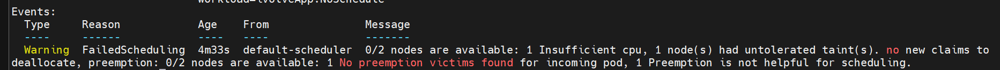
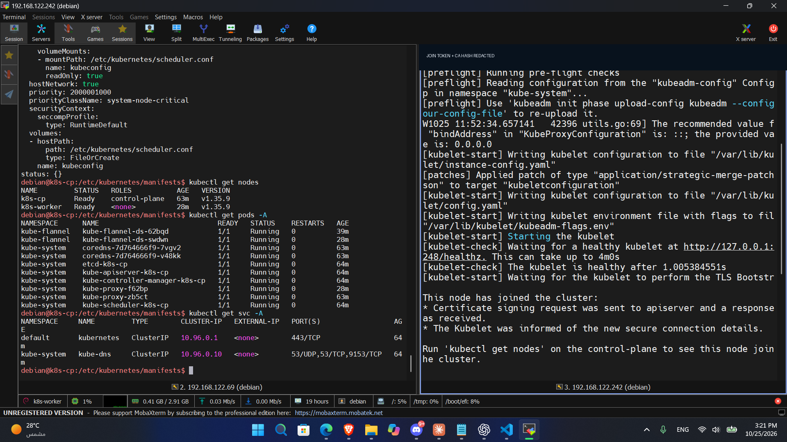
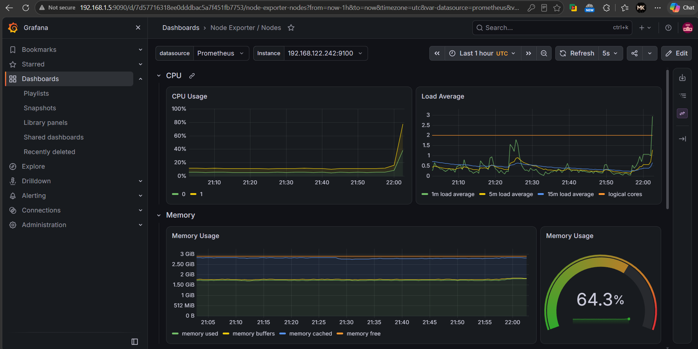
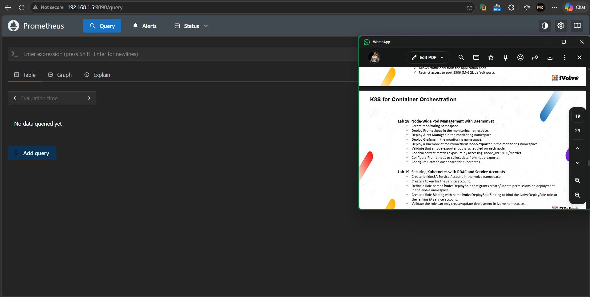
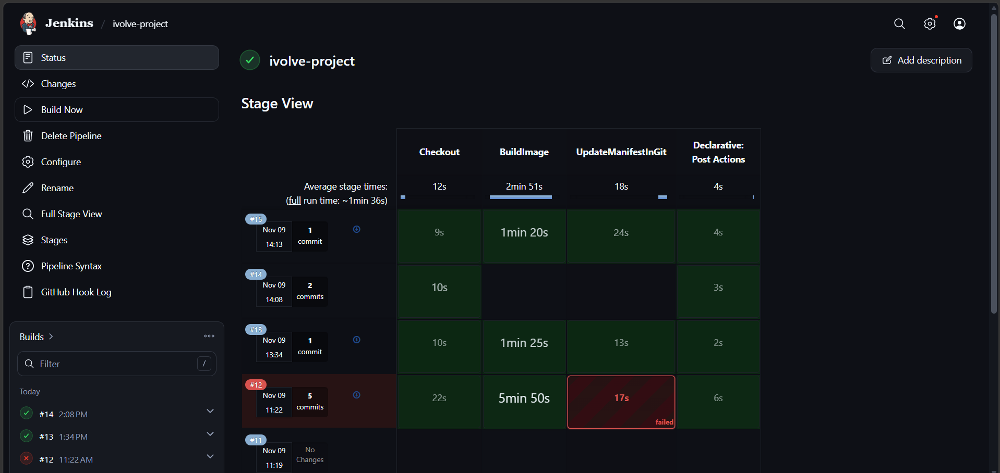
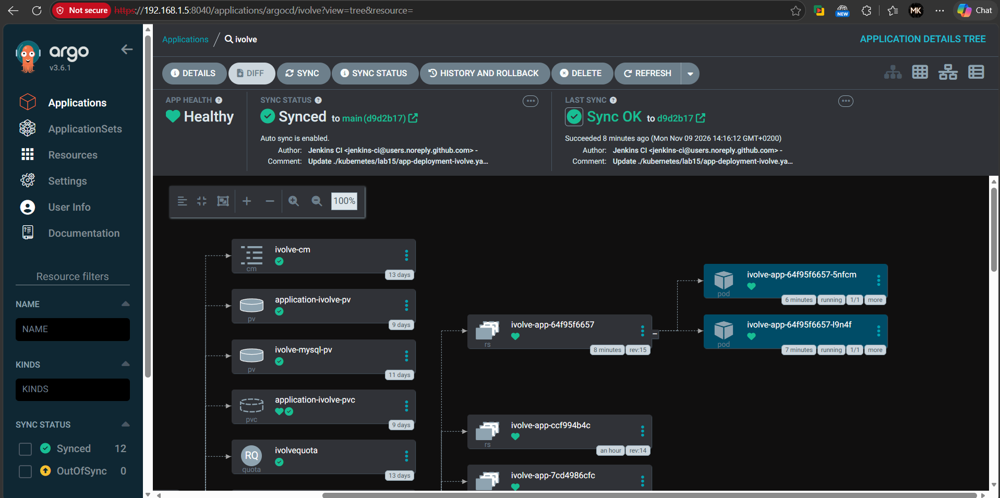
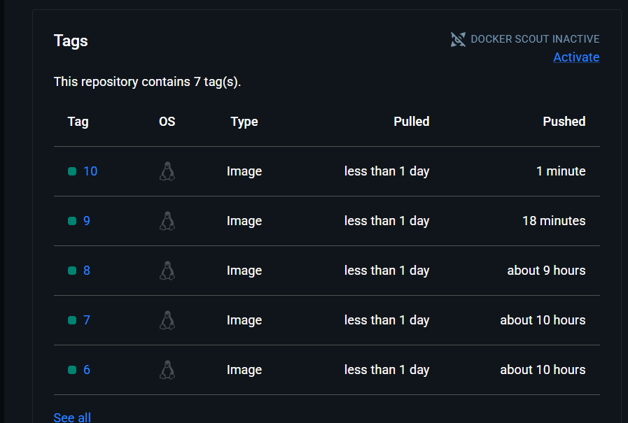
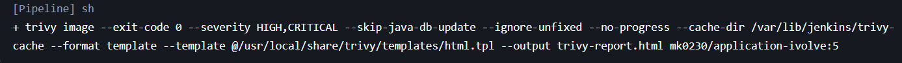
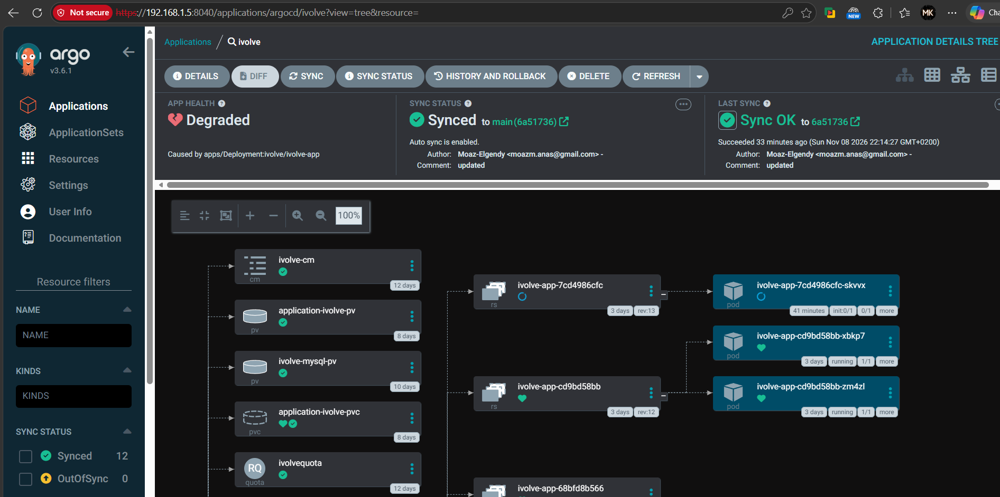
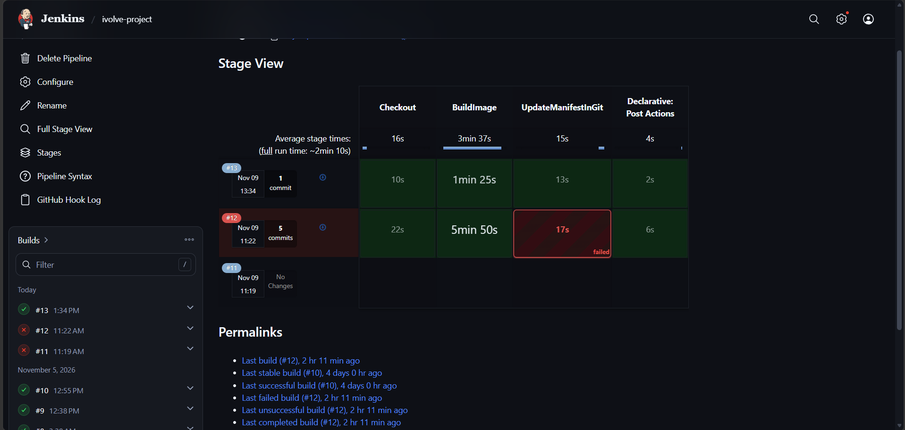

A full GitOps pipeline on one old laptop.
Kubernetes, Jenkins, Argo CD and Prometheus, sharing 2 CPU cores and 8 GB of RAM.
The panel on the right is the whole problem in one picture. Four CPU threads, six things that want to run. Start a Jenkins build and watch the queue grow.
What this is, in plain English
I turned an old laptop into a small cloud. Two virtual computers run a website and its database. When I push new code to GitHub, the laptop builds it, scans it for security problems and rolls it out by itself.
- v1.35.9
- Kubernetes, built by hand with kubeadm
- 28
- pods running across the two nodes
- 2
- KVM virtual machines on one physical laptop
- 0
- manual
kubectl applycommands per release
Three computers, one set of cores
The server and both VMs are not separate machines. They borrow time on the same CPU and the same RAM.
| Machine | What it believes it has | What it really is |
|---|---|---|
| Server | 2 cores, 4 hyper-threads, 8 GB | The only physical machine. Debian 13 without a GUI, running Jenkins, Docker, Trivy and libvirt as plain services. |
| k8s-cp | 2 vCPUs, 3 GB | A qemu process on the server. Each vCPU is one host thread, scheduled like any other program. |
| k8s-worker | 2 vCPUs, 3 GB | The same again. Kubernetes reports exactly cpu: 2 and about 2.9 GiB allocatable. |
The scheduler said no
When I asked each app pod for 1 CPU and 1 GiB, Kubernetes refused to place the extra pod needed for a rolling update. The worker only has 2 vCPUs, and they are shared with everything else on the laptop. I cut the request to 200m CPU and 500 Mi and raised the pod quota from 3 to 4. Hyper-threads also share one core's execution units, so 4 logical CPUs deliver roughly 2.5 cores of real throughput.

1 Insufficient cpu.containerd, so on one OS they would collide. Kubernetes lives in the VMs. Jenkins, Docker and Trivy stay on the host.The whole stack, top to bottom
The laptop is called the server. It is the only physical machine, and I reach it over SSH from my main PC. Nothing is exposed to the internet. Select a pod to see what it does.
Server Debian 13, 192.168.1.5, i5-3230M, 8 GB, 500 GB HDD
virbr0 libvirt NAT network, 192.168.122.0/24
k8s-cp
k8s-worker
workload=ivolveApp, label project=ivolve. Runs the app.Select a pod
Every chip is a real pod from kubectl get pods -A -o wide.
Building the cluster with kubeadm
Two fresh Debian 13 VMs in, one Kubernetes v1.35.9 cluster out. Pick a step.

Ready on v1.35.9. The join token is redacted.- Runtime
- containerd 2.2.2 with runc
- Network
- Flannel v0.28.10 over VXLAN, pod range 10.244.0.0/16
- Operating system
- Debian 13 (trixie), kernel 6.12
The application
A stateless web app with 2 replicas, talking to MySQL through a headless service. All of it lives in the ivolve namespace, and it is the part Argo CD keeps in sync with Git.
mk0230/application-ivolve:15. An init container waits for MySQL and creates the database.ivolve-db-0 and its own 5 Gi volume.- Why a Deployment for the app
- Replicas are interchangeable, so a rolling update can swap them one at a time with no downtime.
- Why a StatefulSet for MySQL
- A database needs a stable name and a disk that follows it. The
volumeClaimTemplategives it both. - Why headless
clusterIP: Nonegives the database a direct DNS name instead of a virtual IP in front of it.- Who may talk to the database
- A NetworkPolicy allows TCP 3306 only from pods labelled
app=ivolve-app. - Configuration
- ConfigMap
ivolve-cmfor host and user, Secretivolve-secretfor passwords,docker-hub-secretto pull the image. - Guardrails
- ResourceQuota
ivolvequotaallows 4 pods: 3 steady plus 1 surge pod during a rollout. Volumes use the Retain policy.
Watching both nodes
One Helm release, monitoring-set, installs kube-prometheus-stack into the monitoring namespace.
Collect
- node-exporterv1.12.1
- kube-state-metricsv2.20.0
node-exporter is a DaemonSet with one pod per node. kube-state-metrics reports on Kubernetes objects.
Store
- Prometheusv3.15.1
- Prometheus Operatorv0.94.2
The operator manages Prometheus and Alertmanager from Kubernetes objects.
Show and alert
- Grafana13.3.0
- Alertmanagerv0.34.2
Grafana ships with the Node Exporter dashboards. Alertmanager groups and routes alerts.


node-ip:9100 on both nodes. One values.yaml adds a toleration so the stack can also run on the tainted control plane.# the whole stack in one command
helm install monitoring-set prometheus-community/kube-prometheus-stack \
-n monitoring --create-namespace -f values.yamlFrom git push to running pod
Jenkins does the CI work: build, scan, push. Argo CD does the deploy. Jenkins never touches the cluster.
What changed when Argo CD arrived
Before, a second Jenkins node on k8s-cp held a kubeconfig and ran kubectl apply. That node is retired and set aside. Now the last Jenkins stage only commits to Git.
Argo CD settings
Application ivolve watches kubernetes/lab15 on main and deploys to the ivolve namespace with auto-sync, self-heal and prune. Self-heal reverts hand edits made with kubectl. Prune deletes what Git no longer contains.
No build loop
Jenkins' manifest commit would trigger another build. Its message ends with [ci skip], and every stage has a changelog condition that skips it. Build 14 below ran only Checkout.

[ci skip] commit, build 15 ran every stage. The full run averages about 1 min 36 s.
main, last sync authored by Jenkins CI. 12 resources, none out of sync.

Three relays from pod to browser
To open Grafana, Prometheus, Argo CD or the app from my main PC, each port is forwarded three times. kubectl port-forward only listens on localhost, so socat carries it across each network layer.
Inside the cluster.
On k8s-cp, bound to localhost.
kubectl port-forward svc/... q:pRe-opens the port on the VM network.
socat TCP-LISTEN:r,fork TCP:localhost:qPublishes it on the LAN at 192.168.1.5.
socat TCP-LISTEN:r,fork TCP:192.168.122.69:rOn the main PC, same LAN.
What broke, and how I fixed it
All four happened on this cluster.
App stuck at init:0/1 after the first Argo sync
- Symptom
- Argo CD showed Degraded. The init container looped on "Waiting for MYSQL".
- Cause
DB_HOSTin the ConfigMap wasivolve, but the Service isivolve-db-svc. DNS failed, and the init loop hid the error.- Fix
- Correct the ConfigMap, then restart the Deployment. The ConfigMap sits outside the path Argo watches, so I applied it by hand.
Show the screenshot

New pod Pending: 1 Insufficient cpu
- Symptom
- A rolling update left a pod unscheduled.
- Cause
- I requested 1 CPU and 1 GiB per pod, on a worker with 2 vCPUs and about 2.9 GiB.
- Fix
- Requests 200m and 500 Mi, limits 1 CPU and 1 Gi. Quota raised from 3 to 4 pods.
metrics-server would not start
- Symptom
- TLS errors in the metrics-server log, and no
kubectl top. - Cause
- kubeadm kubelet serving certificates are self-signed.
- Fix
- Added
--kubelet-insecure-tls. Fine for a private lab. In production I would use signed kubelet certificates.
The pipeline could trigger itself
- Symptom
- Jenkins pushes a manifest commit, which would start another Jenkins build.
- Cause
- The push trigger fires on every commit, including Jenkins' own.
- Fix
[ci skip]in the message plus a changelog condition on each stage.
Show builds 12 and 13

Everything running right now
Workloads from kubectl get deploy,sts,ds -A -o wide, 9 November 2026.
| Kind | Namespace | Name | Ready | Image |
|---|